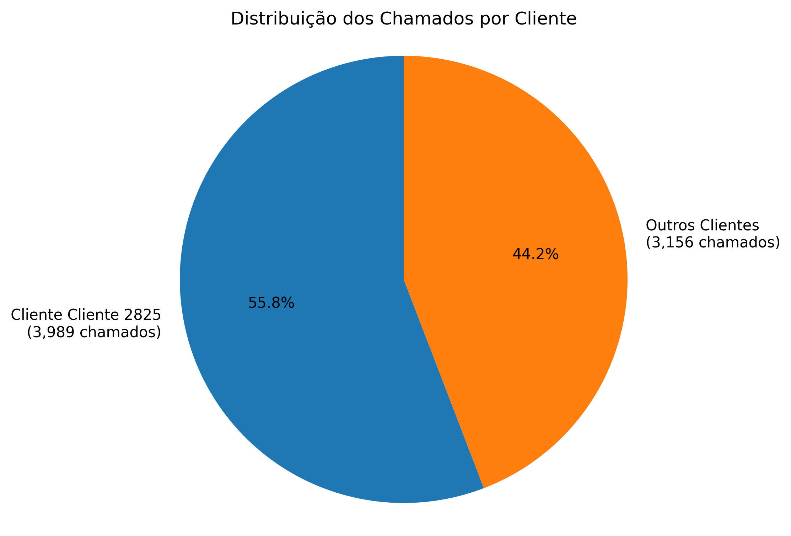

Documentação Completa do Projeto
Nesta seção, você encontrará o relatório final completo do projeto, incluindo todas as análises realizadas, metodologias aplicadas, resultados obtidos e recomendações propostas.
Concentração de Chamados por Cliente
Uma análise importante revelada pelos dados é a alta concentração de chamados em um único cliente.

Distribuição dos Chamados por Cliente
O gráfico mostra a proporção de chamados entre o cliente principal e os demais clientes.
Principais Observações:
- Um único cliente (Cliente 2825) é responsável por 55.4% dos chamados
- Este cliente principal gerou 3,989 chamados no período
- Todos os outros clientes juntos somam 3,206 chamados (44.6%)
Implicações para o Negócio:
- Alta dependência de um único cliente, o que representa um risco operacional
- Necessidade de estratégias para diversificação da base de clientes
- Importância de manter excelência no atendimento ao cliente principal
- Oportunidade de crescimento com os demais clientes